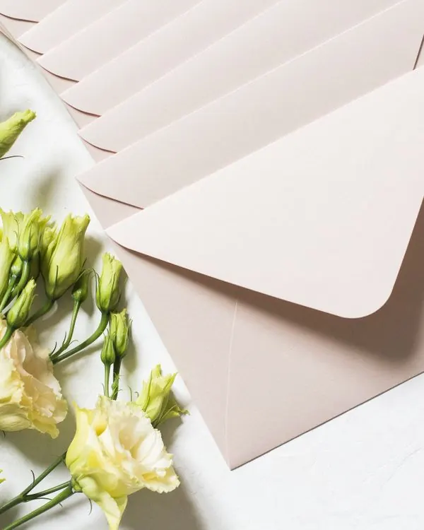

Home / Gallery
Gallery
Tables · florals · ceremonies · roomsRooms before the guests arrive, and the details on the tables. Each photograph is captioned with what it shows and who took it.


Photographs
Filter by setting. These are stock photographs standing in for the studio's own; each caption carries its credit.